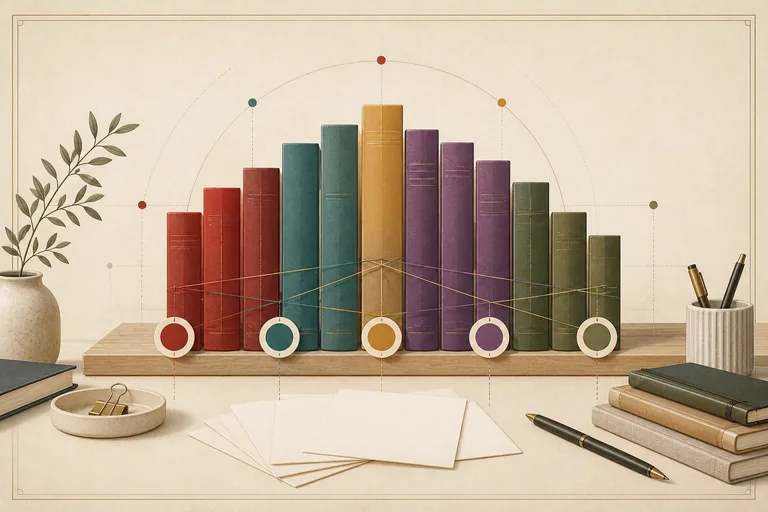

先完成阅读画像
用 30 道具体阅读情境辨认五条倾向，得到最容易进入的文本气质。

不必按顺序读完整个站点。你可以先完成画像，也可以先看阅读地图，再回到测试验证自己的直觉。
回想最近几次真实阅读，按第一反应选择每句话有多像你；拿不准时可以选“说不准”。
按真实阅读经验选择，答案可以随时返回修改。
先读三条速览，再从熟悉、对照和当前情境中选一个试读入口。
从五条阅读倾向出发，继续查看风格档案、阅读情境和风格对照。先从总览选择入口，也可以直接搜索你关心的阅读感受。
查看答案怎样保存在本地、分数怎样生成，以及如何用真实阅读验证结果。